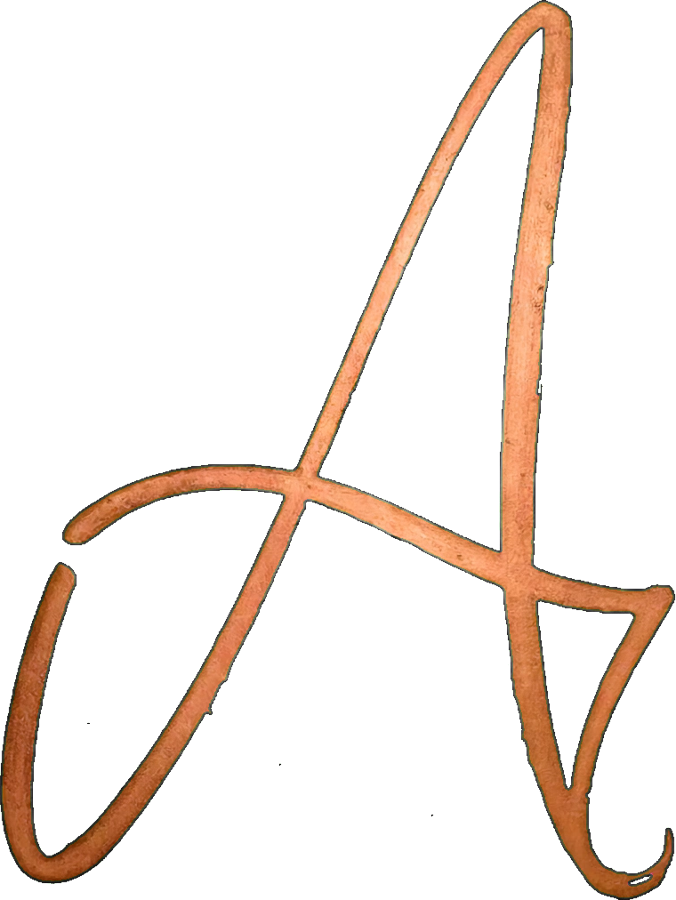

Acendendo a biblioteca
Agora
A luz da sala segue o seu horário. Arraste para ver outra hora.
Quem somos e como trabalhamos
A ANTHROXIA é um estúdio que cria produtos de inteligência artificial com cuidado de arquitetura: cada sistema é planejado em camadas antes de virar tela.
Começamos pelo KAZER, um assistente de IA para a web e para o Android. Tudo o que estamos construindo está nesta estante, um volume por assunto.
O que nos move
Não fazemos só aplicativos. Erguemos estruturas onde a inteligência pode morar.
Acreditamos que tecnologia pode ter assinatura. Que um assistente de IA pode ser bonito, rápido e honesto sobre o que faz com o que você escreve.
Preferimos construir devagar e por inteiro a lançar depressa e pela metade. Cada linha de código é um traço; cada produto, uma casa com fundações.
E quando algo ainda não estiver pronto, você vai saber.
Um assistente de IA, na web e no Android
O KAZER é o primeiro produto da ANTHROXIA: um assistente de IA de visual escuro e minimalista, feito para conversar, planejar e criar.
O KAZER está em desenvolvimento. O download para Android aparece no volume IX assim que o primeiro lançamento estiver pronto.
O KAZ 1.1 rodando no seu aparelho
Em celulares compatíveis, o KAZER poderá usar o modelo KAZ 1.1 direto no aparelho, aproveitando CPU, GPU ou NPU quando disponíveis.
O modelo não vem dentro do app. Depois de entrar, você decide se quer baixá-lo:
Enquanto isso, o KAZER continua funcionando pela nuvem. O modelo baixado fica no aparelho mesmo se você sair da conta.
Um produto, dois aplicativos
Por trás do KAZER existe uma base única: contas, conversas e o acesso aos modelos na nuvem ficam no mesmo servidor.
As chaves de acesso aos provedores de IA ficam só no servidor. Nenhuma delas vai dentro do app.
Você escolhe onde a conversa acontece
No modo só no aparelho, o KAZER não envia a sua conversa para a nuvem sem avisar. Se uma tarefa precisar da nuvem, ele pergunta antes.
Quando a nuvem é usada, nós dizemos. Não prometemos que nada sai do seu celular se isso não for verdade.
As etapas da obra, em ordem
Esta lista mostra a ordem do trabalho, não datas de entrega.
Cores, letras e o A
O A cursivo é a assinatura. A palavra ANTHROXIA, em letras finas, é o nome. O resto existe para dar espaço aos dois.
#FF2BF0#C98457#160B14#F6ECEE#5A1236Títulos em Bodoni Moda; textos e interface em Jost.
KAZER para Android
KAZER para Android
Em breve